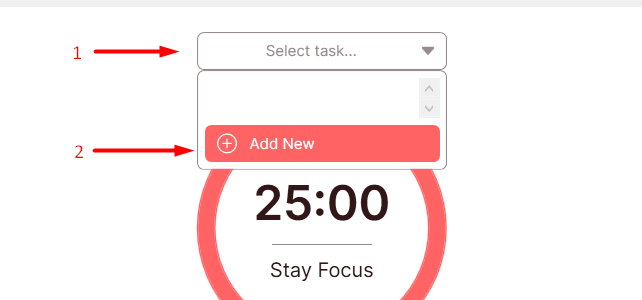
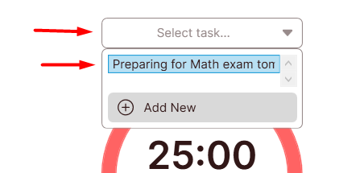
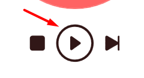
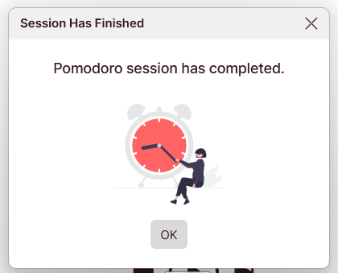
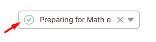

Quick Start
1. Open the app.
2. Begin by adding a new task. Open "Select task...", click Add New.

3. Fill the necessary fields. "Est. Pomodoro" is your estimation of how many pomodoros this task needs to complete.

4. Select the task you've created.

5. Click Play button to start the Focus Session. During this period, you should
focus on doing your task.

6. When the session is done, you'll be
notified. Click OK so you can start the next session. If it's a break
session, you can rest yourself from doing tasks for the specifed
duration.

7. When the task is done, you can click button Mark As
Completed.

8. Repeat the steps above for every task that you want to
accomplish.
9. At the end of the day or week, you can monitor your
progress by going to the Stats page.
10. You can configure the app to
suit your needs on the Settings page.